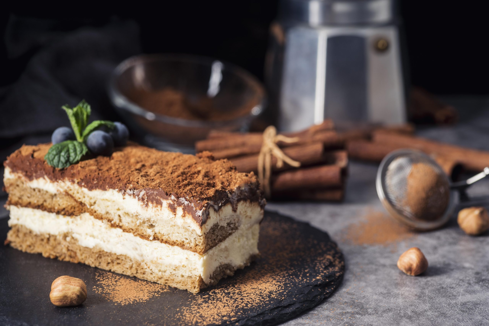

Tiramisu

Description
Tiramisu is a layered Italian dessert prepared with ladyfinger cookies, espresso or instant espresso, mascarpone cheese, eggs, sugar, Marsala wine, rum, and cocoa powder. An intense yet elegant dish arises from the combination of these disparate ingredients. Layers of mascarpone and Italian custard have a delicate flavour that contrasts with the darkly strong presence of espresso and the sharpness of cocoa powder. The term Tiramisu, which means "lift me" in Italian, is most likely a reference to the dish's two stimulant ingredients, espresso, and chocolate.
Ingredients
- 1 ½ cup Espresso (Brewed)
- 2-3 tbsp coffee ((liqueur/marsala/brandy) optional)
- 5 egg yolks
- ½ cup Sugar (+ 2 tbsp or 125 gm)
- 14 oz Mascarpone cheese (425 gm )
- 1 tsp Vanilla (extract)
- 1 ⅔ cups Cream ((or 400 ml) cold heavy )
- Ladyfingers (as required)
- Cocoa powder (for dusting)
Steps
- In a bowl, take 1 ½ cup of brewed espresso and add 2-3 tbsp of coffee liqueur/marsala/brandy in it and mix well and let it cool
- In a separate bowl, take 5 egg yolks and add ½ cup + 2 tbsp (125 gm) of sugar to it
- Set that bowl over a pot with simmering water
- Now whisk constantly, until the sugar is dissolved and the custard thickens
- Note the temperature. The temperature of egg yolk should be 154-158o F (68-70o C)
- Remove the bowl from heat and let it cool
- Now add 14oz (425 gm) of mascarpone cheese and 1 tsp of vanilla extract into the batter and beat until smooth
- In another bowl, add 1 ⅔ cups (400 ml) of cold heavy cream and whip to stiff peaks
- First, fold one-third of the whipped heavy cream into the mascarpone mixture, then fold the rest of the whipped heavy cream
- Dip each ladyfinger into the coffee mixture for 1-2 seconds
- Set the ladyfingers to line-wise in the bottom of a 9×13 inch (22x33cm) dish
- Spread half of the cream on top
- Repeat the process with another layer of ladyfingers
- Spread the remaining cream
- Cover the surface of the dish with cling wrap and refrigerate for at least 6 hours
- Now dust the top with cocoa powder and serve it.